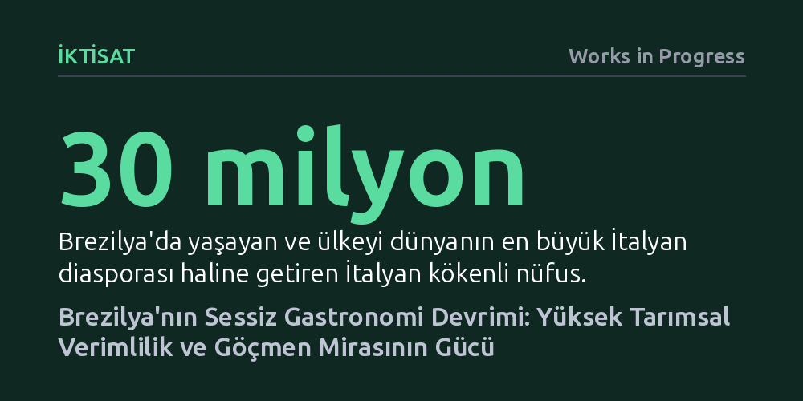

IKTISAT · Works in Progress · 2026-10-19
Brezilya, yüksek tarımsal verimliliği, kısa tedarik zincirleri ve dünyanın en büyük İtalyan ile Japon diasporaları sayesinde küresel ölçekte en hafife alınan üst düzey gastronomi merkezlerinden birine dönüştü. Ülke, Batı metropollerine kıyasla çok daha makul fiyatlarla dünya standartlarında bir mutfak deneyimi sunuyor.
Kalkınmakta olan bir ülkenin mutfak kalitesinin sadece sokak lezzetlerinden ibaret olmadığını; tarım teknolojisi, verimli tedarik zincirleri ve kitlesel göçün birleşerek birinci sınıf bir gastronomi ekosistemi yaratabileceğini gösterir.

Latin Amerika, küresel gastronomi haritasında hak ettiği değeri henüz tam olarak görememiş en büyük üst düzey mutfak havzalarından biri olarak öne çıkıyor. Bölgenin büyük bölümü henüz kitle turizminin yıkıcı etkilerine maruz kalmamış, fiyat dengesini koruyabilmiş ve tabağa gelen yemeğin lezzetinden çok sosyal medyada nasıl göründüğüne odaklanan yapay sunum çılgınlığına teslim olmamış durumda. Brezilya ise bu zengin coğrafyanın lezzet zirvesini temsil ediyor.
Özellikle kırmızı et söz konusu olduğunda, Uruguay ve Japonya'nın Kobe bölgesi gibi istisnalar bir kenara bırakılırsa, dünyanın en kaliteli sığır etlerini sunan ülke rahatlıkla Brezilya'dır. Ülkenin güney eyaletlerinde deneyimlenen et yemekleri, dünyanın en iddialı lüks restoranlarıyla yarışacak, hatta çoğunu geride bırakacak bir lezzet ve pişirme standardına sahip. Üstelik bu üstün kalite sadece etle sınırlı kalmayıp ülkenin geneline yayılan geniş bir sofra kültürüne dayanıyor.
Brezilya mutfağının yakaladığı bu büyük başarının temelinde tesadüfler değil, kırsal kalkınma ve tarım sektörünün yapısal gücü yatıyor. Geniş topraklara, olağanüstü verimli tarım arazilerine ve gelişmiş bir üretim kapasitesine sahip olan ülke, bu avantajı görece kısa tedarik zincirleriyle birleştiriyor. Tarladan ve çiftlikten sofraya uzanan mesafelerin kısalığı, restoranlara ulaşan hammaddelerin hem her daim taze hem de bol olmasını sağlıyor.
Daha da önemlisi, bu tablo aslında doğrudan bir ekonomik ilerleme ve verimlilik hikayesidir. Brezilya, kişi başına düşen gelir açısından çok daha mütevazı bir ülke olmasına rağmen, tarımsal üretim verimliliğinde Amerika Birleşik Devletleri seviyelerine yaklaşmış, hatta bazı ürün gruplarında ABD standartlarını geride bırakmıştır. Ülke ekonomisinin diğer sektörleri aynı hızda modernleşememiş olsa da gıda ve tarım alanında teknoloji entegrasyonu olağanüstü bir başarıyla yürütülmüştür. Bu durum, sofradaki lezzetin arkasında güçlü bir tarımsal üretkenliğin olduğunu kanıtlıyor.
Brezilya yalnızca yerel kaynaklarıyla değil, aynı zamanda devasa göç dalgalarıyla şekillenmiş bir göçmenler ülkesidir. Ülkede yaklaşık iki milyon Japon kökenli yurttaş yaşıyor ve bu nüfusun büyük kısmı ülkenin güneyinde toplanmış durumda. Bu demografik yapı, Brezilya'yı anavatanı Japonya'dan sonra dünyada otantik ve kusursuz Japon yemekleri yenebilecek en nitelikli yerlerden biri haline getiriyor. Örneğin São Paulo'da Michelin yıldızlı sekiz kişilik bir restoranda, şefin bizzat hazırladığı on beş aşamalı üst düzey bir omakase menüsüne, Batı başkentlerinde hayal bile edilemeyecek bir erişilebilirlikle ulaşılabiliyor.
Benzer bir zenginlik İtalyan mutfağı için de geçerli. Yaklaşık 30 milyonluk nüfusuyla dünyanın en büyük İtalyan diasporasını barındıran Brezilya; İtalya ve Japonya'nın ardından İtalyan mutfağını en iyi icra eden üçüncü ülke konumunda bulunuyor. Üstelik bu göçmen lezzetleri; açaí, kaju elması, jabuticaba ve taze palmiye kalbi gibi benzersiz yerel meyvelerle ve Amazon bölgesinden gelen egzotik nehir balıklarıyla harmanlanıyor. Siyah fasulye, pirinç ve kurutulmuş manyok ununun birleştiği ulusal yemek feijoada ise kölelik dönemine uzanan kökleriyle bu çok katmanlı kimliğin simgesi olarak varlığını sürdürüyor.
Brezilya'nın gastronomi başkenti olan São Paulo, yoğun iş ve ticaret hayatının merkezinde yer almasına karşın yabancı turist akınından oldukça uzaktır. Şehirdeki müzeleri, parkları ve caddeleri gezerken bile yabancı turistlere pek rastlanmaz. Bu durum gastronomi sahnesi açısından büyük bir avantaja dönüşüyor; çünkü restoranlar geçici turistleri çekmek için kaliteden ödün vermek yerine, yerel damak tadını iyi bilen ve devamlılığı olan sadık müdavimleri memnun etmek zorundadır.
Fiyat dengesi açısından bakıldığında Brezilya; Meksika veya Güneydoğu Asya'nın sokak yemekleri kadar ucuz olmasa da New York, Londra veya Paris gibi küresel metropollerin lüks restoranlarına kıyasla çok daha hesaplıdır. Üstelik üst segment lokantalarda sunulan servis, dekorasyon ve malzeme kalitesi bu metropollerle doğrudan boy ölçüşecek düzeydedir. Ülkenin her bölgesindeki yerel tatlar aynı başarıyı yakalayamasa da Brezilya, sokak lezzetlerine sığınmak zorunda kalmadan, restoran masasında gerçek ve nitelikli yemek arayanlar için eşsiz bir zenginlik sunmaktadır.